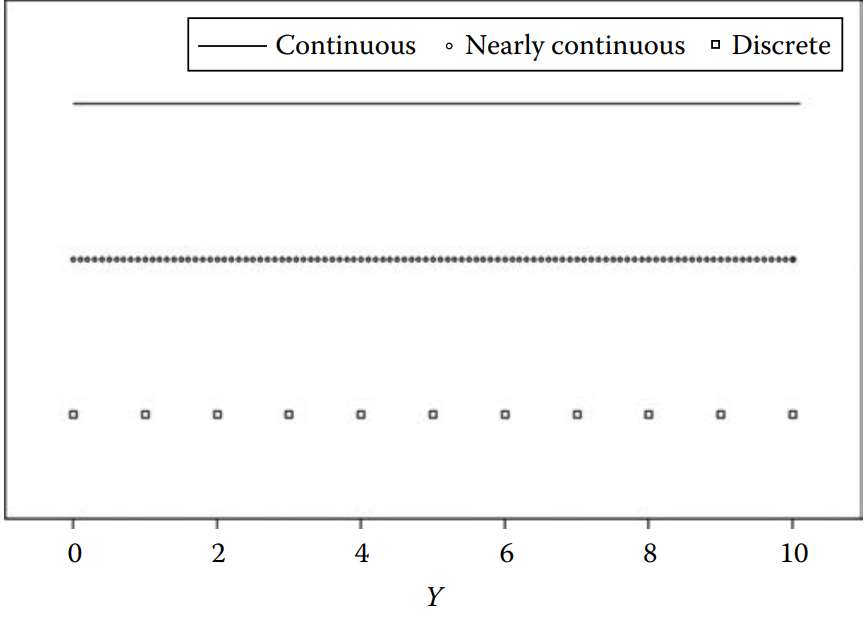
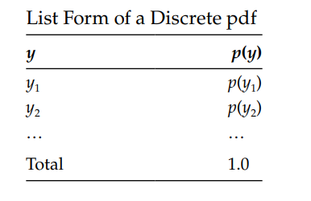
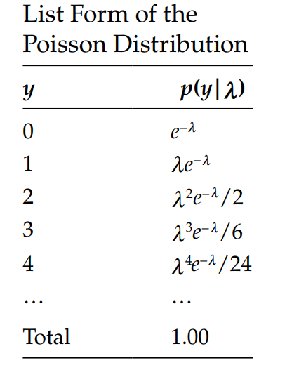
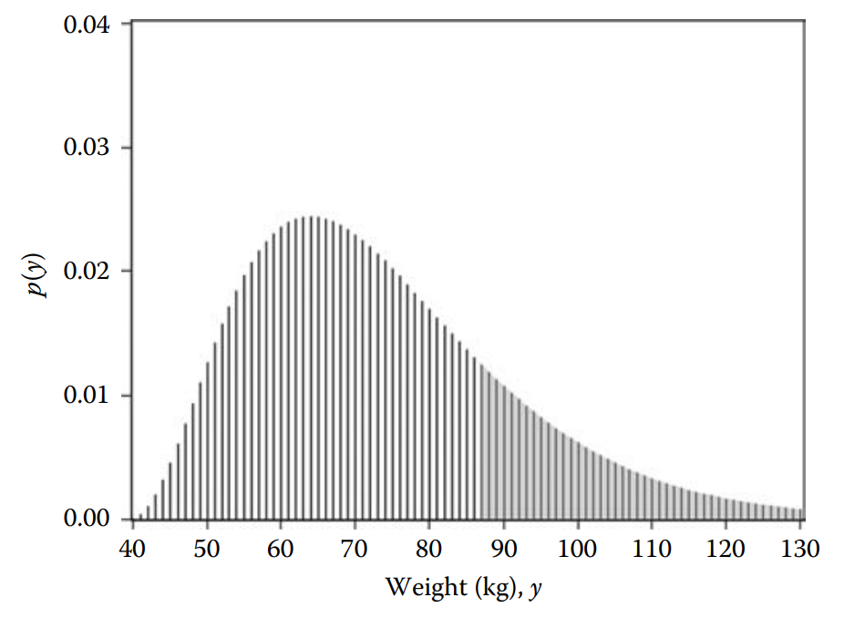
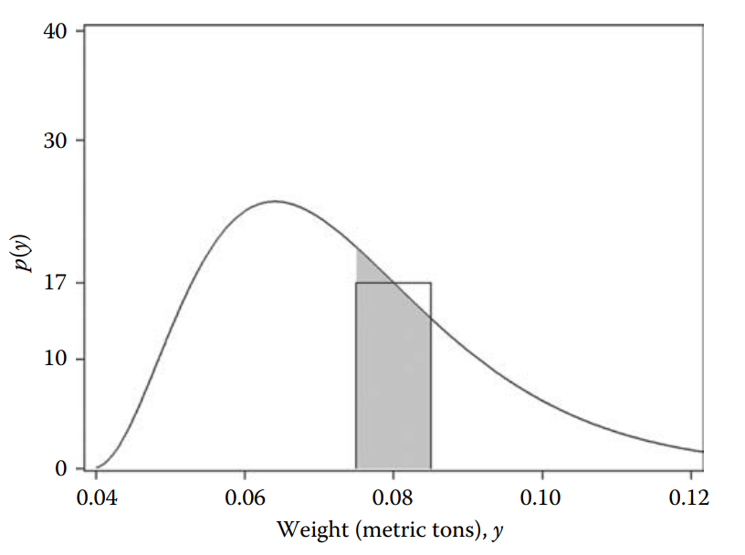
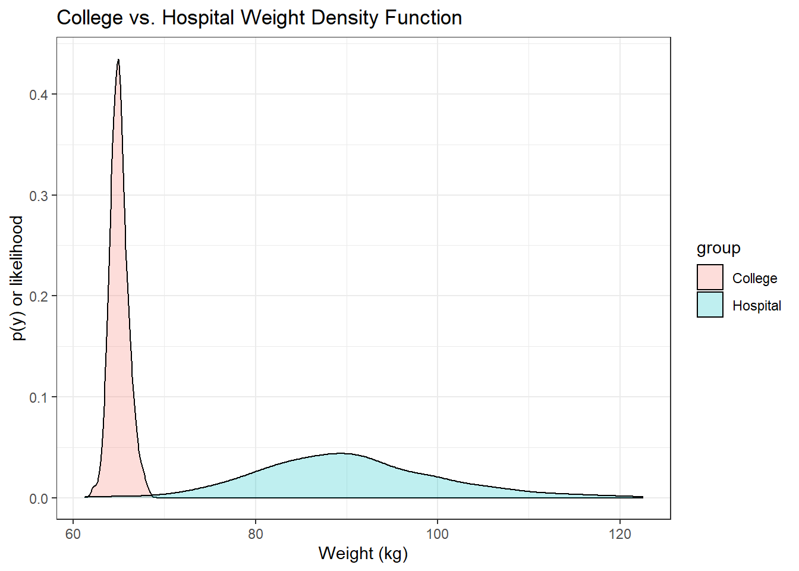

In our last session we talked about DATA (uppercase) and data (lowercase).
We studied that DATA means all the possible values in Nature for instance, all the college students in US versus a single fix observation called data (lowercase)
In this session is important to remember this convention.
DATA means random variable whereas data means fixed quantities.
For instance, in a dice you have 6 possible values, when roll a dice ; let’s imagine you get 5 , then your data is y = 5 while you DATA is any possible value from 1 to 6.
Random variables have a distribution, this means DATA is random.
Types of DATA
Nominal DATA: These are DATA whose possible values are essentially labels (or, as the word nominal suggests, names), with no numerical value. Ex: marital status, job title, political affiliation.
Continuous DATA: These are numerical DATA whose possible values lie in a continuum, or in a continuous range. For instance the duration of this class in seconds.
Ordinal DATA: These types of DATA are intermediate between nominal and continuous. Unlike nominal data, which can be numbers without intrinsic order such as 1 = male and 2 = female, ordinal DATA are numbers that reflect an intrinsic order, hence, the name ordinal. Example, education level, ranking of your favorite dessert.
Nominal data
library(ggplot2) ### <- this is a package in R to create pretty plots.## setwd() is a function to set my working directory (folder where the data is located)setwd("C:/Users/emontenegro1/Documents/MEGA/stanStateDocuments/PSYC3000/lecture4")rumination <-read.csv("ruminationComplete.csv") rumination$sex <-factor(rumination$sex, labels =c("female", "male"))ggplot(data = rumination, aes(x = sex)) +geom_bar()+theme_bw()
Nominal and Ordinal DATA are considered discrete DATA, this means that values can be listed.
Continuous DATA cannot be listed because all possible values lie in a continuum.

Discrete Probability Distribution Functions
In our previous class I mentioned the concept of probability density function (pdf), in simple words, the pdf is the model for a random variable.
For example, you can assume that the pdf of the normal distribution produces you DATA. DATA such as grades in all the statistics classes in US can be assumed to be generated by a normal distributed model.
We will revisit more about the normal distribution in this class.
Discrete Probability Distribution Functions
But let’s focus on discrete distributions first.
As I said before, a discrete variable can be listed as showed below:

In this table \(p(y)\) represents the probability of any variable \(y\).
When we talk about discrete distributions we talk about probability mass function , when the variable is continuous we used the concept probability density function.
Discrete Probability Distribution Functions II
A Discrete pdf or probability mass function has several requirements:
The probabilities are NEVER negative, but they could be zero.
The total probability is 1.0 or 100%
Discrete Probability Distribution Functions III
Probability distributions are the most important component in statistics.
We always talk about the normal distribution model, however there several different distributions in the universe. But we are going to study only a few of them.
Do you remember the coin example? The right model for the coin problem is the pdf discovered by Bernoulli. In fact, many people call it the Bernoulli distribution. Its formal representation is as follows:
No worries about the interpretation of the formula, we might have time to study this distribution at the end of this course. Let’s focus on how we can use this model.
Simulation time!
Remember the mantra: Models produce data, this means we can produce data using the Bernoulli model:
Let’s think about the tossing the coin, we can assign numerical values to the the results, for instance each time we get a head we will code it as 1.00, when we get tail we’ll code it as 0.00.
In the R code above, I’m simulating tossing a coin randomly 100 times using the discrete Bernoulli distribution, after doing that I get exactly zeros and ones, as we expected. Now, following the coin toss model, we should have a probability \(p(heads)= 0.50\) in the long run.
But wait? Why we don’t get 0.50? According to our simulated data we have a probability of 0.48.
Let’s try again but this time lets generate 1006 values:
That’s magic! Now we have 0.50 probability of getting heads, what happened?
When we have more observed data we are closer to the DATA generating process value. The value for our unknown parameter is 0.50 according to our model, after adding more data, we are close to that number. This is also called the Law of Large Numbers.
Simulation time! II
Hopefully, at this point the notion of DATA versus data starts to make sense.
I want to introduce another model that we might study further if time allows, this new model is the Poisson pdf, a.k.a Poisson distribution.
The symbol \(\lambda\) is the Greek letter “lambda”, it represents the theoretical average.
The letter \(e\) is called Euler’s constant, its numerical value is approximately \(e = 2.71828...\). You might remember this symbol when you did exponential functions in high school or college. -The term \(y!\) is “y factorial” , you might remember factorials from high school or college, they are used a lot in probability. It can be defined as:
\[\begin{equation}
y! = \textrm{1 x 2 x 3 x 4 x ...x y}
\end{equation}\]
Simulation time! III
As always, it is not required to remember the Poisson formulation, but it is more important to understand how we can use this model to explain our observed data:
Let’s imagine that you want to find a model to describe attendance in high school. We could try to generate data that assumes that a high school student has on average 8 absences.
set.seed(1236)absences <-8N <-300dataGenerated <-rpois(N, absences)cat("The mean is ", mean(dataGenerated))
The mean is 7.98
Our model generated 300 observations, with an average number of absences = 7.98. It is likely that this number will be closer to 8 if you simulate more observations.
Simulation time! IV
The probability of each value in our tiny Poisson simulation can be represented in list form as:

The Poisson pdf is a good model to represent counts such as the number of times you successfully wake up early and do exercise, the number of shoes, the number of family members in each household and many other counting variables.
Continuous Probability Distribution Functions

Continuous distributions have several differences compare to discrete distributions.
When the density plot corresponds to a continuous distribution, the \(y\)-axis does not show probability.
When you estimate the density of continuous distribution you are estimating the “relative likelihood” For example, in this plot 50 kg has a likelihood of around 0.014, 55 kg has a likelihood of around 0.021. This means that is more likely to observe 55 kg compare to 50 kg.
Continuous Probability Distribution Functions II
Important: - The probability of a value in a density plot can only be estimated by calculating by estimating the area under the curve.
The total area under the curve in discrete and continuous functions is always equal to 1.0.
Continuous Probability Distribution Functions III

In this graph Westfall & Henning (2013) changed the metric from kg to metric tons.
This helps to show you how to estimate the probability of 0.08 metric tons from a density plot.
Then the probability of observing a weight (in metric tons) in the range \(0.08 \pm 0.005\) is approximately 17 × 0.01 = 0.17. Or in other words, about 17 out of 100 people will weigh between 0.075 and 0.085 metric tons, equivalently, between 75 and 85 kg.
But this is is just an approximation, integrals would give us the exact probability, but we will avoid calculus today.
Continuous Probability Distribution Functions IV
Requirements for a Continuous pdf
The values on the \(y\)-axis are always positive, it means the likelihood is always positive.
Given that the area under curve represents PROBABILITY, the total area is always equals to 1.0.
At this point it looks a little bit esoteric and dark, I will untangle the components of the normal distribution formulation.
The component \(\frac{1}{\sqrt{2\pi\sigma}}\) is what we call a constant, it is a fixed quantity. Every probability density function will have a constant. This constant number helps to make sure that the area under the curve of a distribution is equal to 1 (believe me this is true!).
The second component \(exp \left\{ \frac{-(y-\mu)^2}{2\sigma^2} \right\}\) is what is called kernel it is like the “core” of the area under the curve.
The third important component is \(p(y|\mu, \sigma^2)\), in this expression; \(y\) represents any numeric value, \(\mu\) represents the mean of the distribution and \(\sigma\) is the variance of the distribution. Now we can read this third component as “probability of any number given a mean, and a variance”
More distributions: normal distribution II
As always, let me simulate some values using R, imagine we need to find a model that best describes the weight distribution in College students. For this task, we could assume the normal distribution model with a mean of 65 kg and standard deviation equals to 1.0.
### Random starting numberset.seed(359)### Mean or average in Kg Mean <-65## Standard DeviationSD <-1## Number of observationsN <-300### Generated values from the normal distributiondata_1 <-rnorm(n = N, mean = Mean, sd = SD )data_1
We can check the density distribution of this sample that comes from the normal distribution model:
plot(density(data_1), xlab ="Weight (kg)", ylab ="p(y) or likelihood", main ="Normal density function of college student's weight")
More distributions: normal distribution IV
We can also imagine that we need a model to describe the weight of hospital patients. But, this time probably, we will see more overweight individuals because of diverse health problems. Then, a mean = 65 kg is not realistic (143.3 lbs), probably we should assume a mean = 90 kg (198.42 lbs), and probably the observed data will be spread out, so we can use a larger values for the standard deviation, perhaps something around 10.
### Random starting numberset.seed(359)### Mean or average in Kg Mean <-90## Standard DeviationSD <-10## Number of observationsN <-300### Generated values from the normal distributiondata_2 <-rnorm(n = N, mean = Mean, sd = SD )data_2
library(ggplot2) ### <- this is a package in R to create pretty plots.dataMerged <-data.frame(group =c(rep("College", 300),rep("Hospital", 300)),weight =c(data_1, data_2))ggplot(dataMerged , aes(x=weight, fill=group)) +geom_density(alpha=.25) +theme_bw()+labs(title ="College and Hospital Weight Density Function") +xlab("Weight (kg)") +ylab("p(y) or likelihood")

What is the main message here?
The main message is: Models produce data!
Remember we were talking about NATURE and DATA (uppercase)?
Our statistical model (e.g. normal distribution) is our approximation to DATA, we create models that will generate observed data. That’s why in simulations sometimes our model is called “population model”, and from our data generating model we produce observed data.
Remember when we talked about random variables vs. fixed quantities?
When we refer to the DATA (population model) the variables are random, but when we generate data like we did in R that data are fixed quantities similar to collect data on campus related to dating strategies, once you collect your data, those numbers are fixed quantities that were generate by a natural process (data generating process). We cannot control the natural process like we do in simulation.
We reduce uncertainty when we add more observations. We will study more about it in the next classes.
References
Westfall, P. H., & Henning, K. S. (2013). Understanding advanced statistical methods. CRC Press Boca Raton, FL, USA: